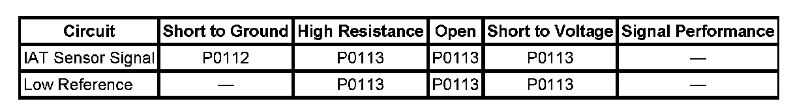
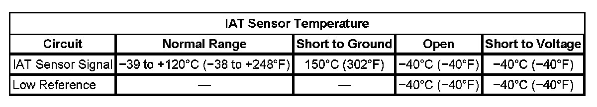

P0112
DTC P0112 or P0113
DTC DESCRIPTORS
DTC P0112
Intake Air Temperature (IAT) Sensor Circuit Low Voltage
DTC P0113
Intake Air Temperature (IAT) Sensor Circuit High Voltage
DIAGNOSTIC FAULT INFORMATION

Perform the Diagnostic System Check - Vehicle prior to using this diagnostic procedure. Initial Inspection and Diagnostic Overview
TYPICAL SCAN TOOL DATA
IAT Sensor Temperature:

CIRCUIT/SYSTEM DESCRIPTION
The intake air temperature (IAT) sensor is a variable resistor that measures the temperature of the air entering the engine. The engine control module (ECM) supplies 5 volts to the IAT signal circuit and supplies a ground to the low reference circuit.
CONDITIONS FOR RUNNING THE DTC
P0112
- DTCs P0116, P0117, P0118, P0128, P0502, P0503 are not set.
- The engine is running for more than 10 seconds.
- The engine coolant temperature (ECT) is less than 150°C (302°F).
- This DTC runs continuously within the enabling conditions.
P0113
- DTCs P0101, P0102, P0103, P0116, P0117, P0118, P0128, P0502, P0503 are not set.
- The engine is running for more than 10 seconds.
- The ECT is more than -40°C (-40°F).
- The MAF Sensor parameter is more than 512 g/s.
- This DTC runs continuously within the enabling conditions.
CONDITIONS FOR SETTING THE DTC
P0112
The ECM detects that the IAT is more than 149°C (300°F) for more than 5 seconds.
P0113
The ECM detects that the IAT is less than -39°C (-38°F) for more than 5 seconds.
ACTION TAKEN WHEN THE DTC SETS
DTCs P0112 and P0113 are Type B DTCs.
CONDITIONS FOR CLEARING THE MIL/DTC
DTCs P0112 and P0113 are Type B DTCs.
CIRCUIT/SYSTEM VERIFICATION
If the ignition has been OFF for 8 hours or more, the IAT and the ECT, should be within 15°C (27°F) of each other and also the ambient temperature. Turn ON the ignition, with the engine OFF, and use a scan tool to observe the IAT and ECT parameters.
CIRCUIT/SYSTEM TESTING
IMPORTANT: All electrical components and accessories must be turned OFF and allowed to power down.
1. Ignition OFF, disconnect the mass air flow (MAF)/IAT harness connector at the MAF/IAT sensor.
2. Ignition OFF, test for less than 5 ohms of resistance between the low reference circuit and ground.
- If greater than the specified range, test the low reference circuit for an open/high resistance. If the circuit tests normal, replace the ECM.
3. Ignition ON, verify the scan tool IAT Sensor parameter is less than -39°C (-38°F).
- If greater than the specified range, test the signal circuit for a short to ground. If the circuit tests normal, replace the ECM.
4. Install a 3A fused jumper wire between the signal circuit and a good ground. Verify the scan tool IAT Sensor parameter is greater than 149°C (300°F).
- If less than the specified range, test the signal circuit for a short to voltage or an open/high resistance. If the circuit tests normal, replace the ECM.
5. If all circuits test normal, test or replace the MAF/IAT sensor.
COMPONENT TESTING
Measure and record the resistance of the IAT sensor at various ambient temperatures, and then compare those measurements to the Temperature vs Resistance Table. Refer to Temperature Versus Resistance.
REPAIR INSTRUCTIONS
Perform the Diagnostic Repair Verification after completing the diagnostic procedure.
- Mass Airflow Sensor/Intake Air Temperature Sensor Replacement
- Control Module References for ECM replacement, programming, and setup. Verification Tests